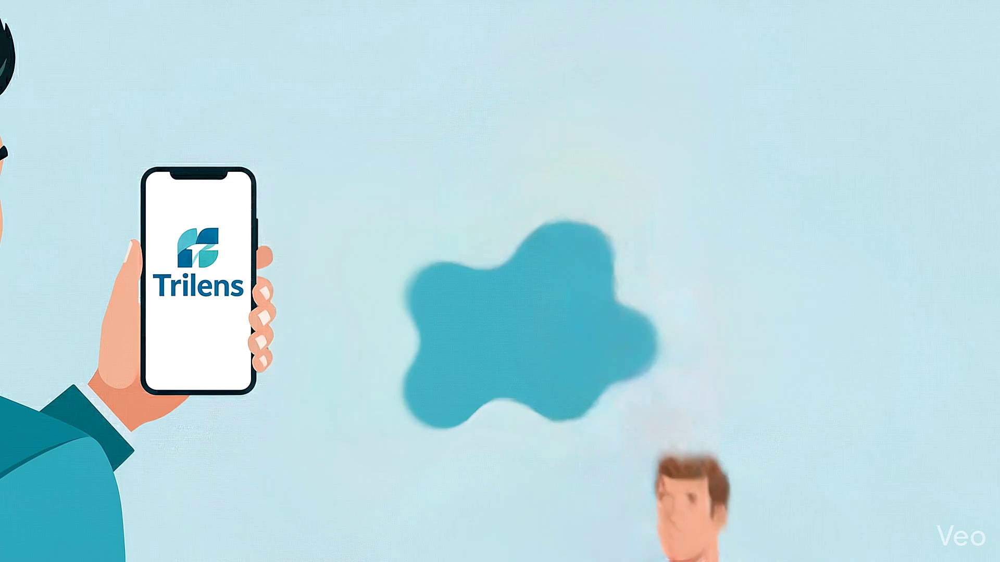
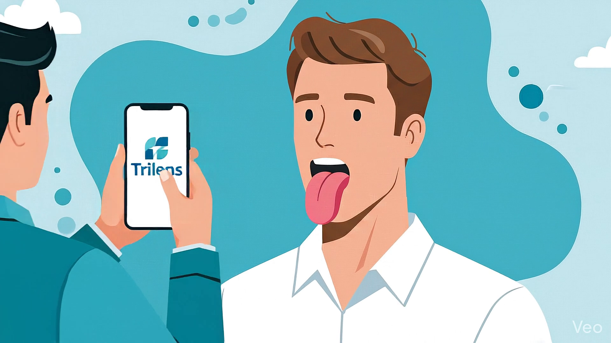
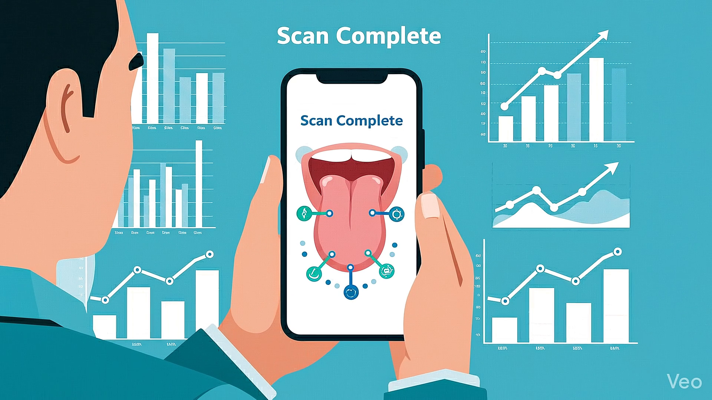

The Journey
From a simple scan to a comprehensive health report — in four effortless steps.

Launch the TriLens app — the interface glows softly, ready to begin your health check in seconds.

The subject opens wide — the macro lens captures the tongue's surface topography in stunning detail.
A digital scanning grid connects the lens to the tongue, as the neural network processes the image in real time.

A 3D tongue map with color-coded heat zones, hydration levels, and coating thickness — all in your pocket.
Core Technology
Three pillars powering the most advanced tongue diagnostic platform on the market.
Macro Imaging
The TriLens attachment delivers 40× magnification with multi-spectrum illumination — capturing surface-level detail invisible to the naked eye.
Pattern Recognition
A proprietary convolutional neural network trained on 100K+ annotated tongue images identifies over 40 distinct biomarkers in under 3 seconds.
Secure Cloud Reporting
End-to-end encrypted health reports sync to your provider's dashboard — enabling longitudinal tracking, predictive alerts, and HIPAA-compliant data sharing.
Under the Hood
The proprietary engineering stack powering Doc Tong's real-time diagnostic pipeline — from photon to prediction.
Multi-spectral image pre-processing with adaptive histogram equalization and real-time segmentation of tongue regions.
Custom EfficientNet-v2 architecture fine-tuned on a curated medical dataset, optimized for mobile inference via TensorFlow Lite.
On-device inference with CoreML / NNAPI — zero cloud latency for critical first-pass analysis. Full results sync asynchronously.
AES-256 at rest, TLS 1.3 in transit. FHIR-compatible health records with granular access controls and audit logging.
The Vision
From hackathon winner to a full-scale preventive health ecosystem.
Phase 1
MVP development — core tongue imaging pipeline, initial CNN model training, and proof-of-concept mobile app with basic scan & report.
Phase 2
IRB-approved clinical trials, expanded training dataset to 100K+ images, and partnership with medical institutions for ground-truth labeling.
Phase 3
TriLens hardware mass production, EHR integrations via FHIR APIs, multi-language support, and launch on iOS & Android app stores.
Phase 4
Predictive health alerts, wearable integrations, telehealth partnerships, and expansion into multi-organ diagnostics beyond tongue analysis.